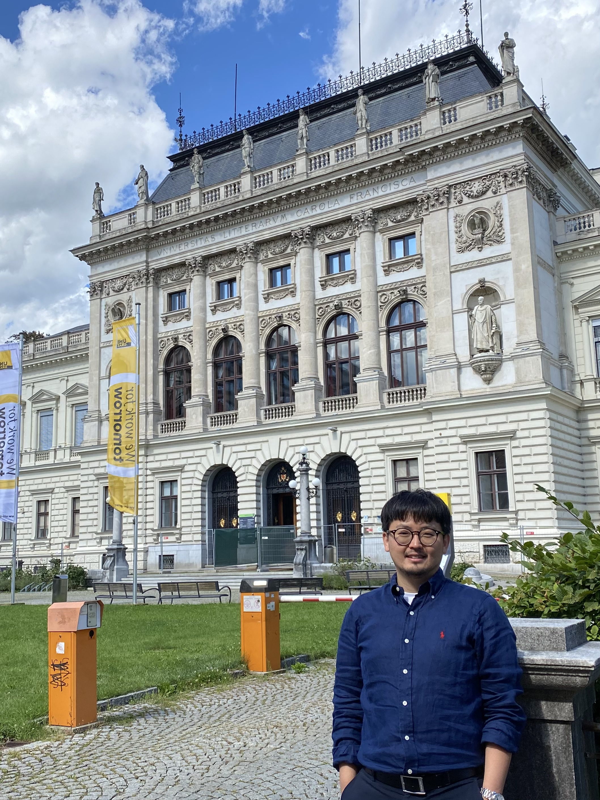

A classification of finite groups with small Davenport constant.
Submitted.
Jun Seok Oh

I am an assistant professor at Department of Mathematics Education of Jeju National University.
Before that, I was a BRL postdoctoral researcher at UNIST within the UNIST Number Theory Group, and a postdoctoral research fellow at Incheon National University in Republic of Korea. I obtained my PhD in July 2019 under the supervision of Alfred Geroldinger within the doctoral program DK Discrete Mathematics at the University of Graz in Austria.
My research interests are commutative algebra (with the focus on non-unique factorizations of rings and monoids) and combinatorial and additive number theory (with the focus on the study of product-one sequences over finite groups).
Contact
- E-Mail:
- junseok.oh@jejunu.ac.kr
- Address:
-
Department of Mathematics Education
Jeju National University
Jejudaehak-ro 102, Jeju-si
Jeju Special Self-Governing Province 63243
Republic of Korea - Office:
- Office 2208, Building of College of Education 2nd
Publications
-
Prime factorization of ideals in commutative rings, with a focus on Krull rings.
(with G.W. Chang).
J. Korean Math. Soc. 60 (2023), 407 - 464. -
On the class semigroup of root-closed weakly Krull Mori monoids.
Semigroup Forum 105 (2022), 517 - 533. -
When does a quotient ring of a PID have the cancellation property?
(with G.W. Chang).
Int. Electron. J. Algebra 32 (2022), 86 - 90. -
On zero-sum free sequences contained in random subsets of finite cyclic groups.
(with S.J. Lee).
Discrete Appl. Math. 330 (2023), 118 - 127. -
The monoid of regular elements in commutative rings with zero divisors
(with G.W. Chang).
Comm. Algebra 50 (2022), 1182 - 1198. -
On product-one sequences over dihedral groups.
(with A. Geroldinger, D.J. Grynkiewicz, and Q. Zhong).
J. Algebra Appl. 21 (2022), 2250064 (58 pp). -
On Erdös-Ginzburg-Ziv inverse theorems for Dihedral and Dicyclic groups.
(with Q. Zhong).
Israel J. Math. 238 (2020), 715 - 743. -
On minimal product-one sequences of maximal length over Dihedral and Dicyclic groups.
(with Q. Zhong).
Commun. Korean Math. Soc. 35 (2020), 83 - 116. -
On the algebraic and arithmetic structure of the monoid of product-one sequences II.
Period. Math. Hungar. 78 (2019), 203 - 230. -
On the algebraic and arithmetic structure of the monoid of product-one sequences.
J. Commut. Algebra 12 (2020), 409 - 433.